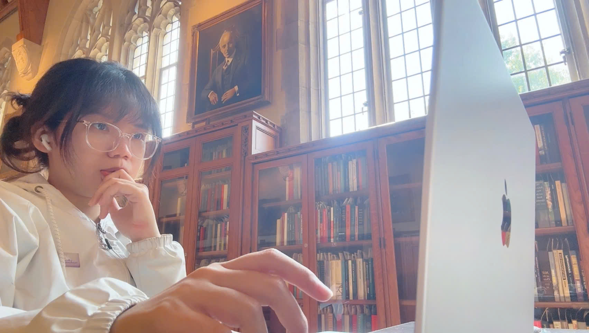

Vi Vu
Vision and Image Processing Laboratory, Duke University, Durham, North Carolina, USA
(Received August 2026; advisor: Prof. Sina Farsiu)
Abstract. Medical images are expensive to label, noisy when labeled, and rarely look the same from one hospital to the next. I study how to learn reliable models anyway. My work spans semi-supervised and unsupervised learning, transfer learning, and multimodal learning under domain shift, with a growing focus on foundation models such as the Segment Anything Model. I came to medical AI from computer engineering, and to computer engineering from physics.
PACS: 87.57.-s (medical imaging); 07.05.Mh (neural networks, artificial intelligence).
ACM CCS: Computing methodologies → Image segmentation; Semi-supervised learning settings.
Contact: vi.vu [at] duke [dot] edu ·
Scholar ·
GitHub ·
LinkedIn ·
CV
I. Introduction
I am a first-year Ph.D. student in the Vision and Image Processing Laboratory at Duke University, working with Professor Sina Farsiu. Before Duke I studied computer engineering at Ho Chi Minh City University of Technology, where I graduated as valedictorian, and before that I studied physics.†
Much of my research can be read as variations on a single objective. Given a small labeled set and a large unlabeled set , one trains a model by minimizing
where the second term asks the model to be consistent on images nobody has annotated. The hard part is that is rarely clean: stains vary, scanners differ, and the labels in are noisy. My papers propose ways to make (1) behave under these conditions, using mixture-of-experts [7], co-training with foundation models [2], hierarchical distillation [9] and disentangled representations [10].
II. Education
- 2026–
- Duke University. Ph.D. in Biomedical Engineering; Vision and Image Processing Laboratory.
- 2021–25
- Ho Chi Minh City University of Technology. B.E. in Computer Engineering (High-Quality Program). Valedictorian, first of 749 in Computer Science and Engineering; GPA 9.27/10 [transcript].
III. Research Experience
A. Carnegie Mellon University, 2024–26
Research Assistant, Xu Lab. Mixture-of-experts for semi-supervised segmentation (Semi-MoE); led SemiSAM, a bidirectional co-training framework aligning foundation and conventional models on unlabeled data; mixed-domain segmentation.
B. Northwestern University, 2025–26
Research Assistant, Machine & Hybrid Intelligence Lab. A mean-teacher framework separating stain appearance from tissue structure in histopathology; source-free domain adaptation; radiomics of laryngeal cancer.
C. National Cheng Kung University, 2025
Research Intern, Integrated MechanoBioSystems Lab. A Y-Net Siamese architecture for 3D single-cell tracking and segmentation in time-lapse imaging.
D. FPT Software AI Center, 2024
AI Researcher. Denoising diffusion implicit models for interactive point-cloud shape deformation (DragPC).
E. AIVIETNAM, 2024–
Research Associate and Teaching Assistant. Co-lead of the AI-in-Medicine Applications lab (four teams); teaching support for more than 600 students.
Acknowledgments
The author thanks S. Farsiu, M. Xu, X. Li, T. Wang, U. Bagci, T.-Y. Tu, A. Nguyen and Q. V. Dinh for their advising, and many co-authors for their patience.
* Electronic address: vi.vu [at] duke [dot] edu
† First Prize, Ho Chi Minh City Excellent Physics Student Competition.

References
The author’s name is set in bold; * denotes equal contribution. See also Google Scholar.
- V. M. K. Nguyen, K. N. V. Ngoc, V. Vu, T. Nguyen, T. H. Nguyen, and M. Xu, “Beyond visible boundaries: Benchmarking foundation models for overlapping cell segmentation in microscopic imaging,” in CVPR Workshops (Precognition) (2026). [pdf]
- V. Vu*, H. T. Nguyen*, T. T. Nguyen*, T. B. Lam, T. H. Nguyen, T. Wang, X. Li, and M. Xu, “From specialist to generalist: Unlocking SAM’s learning potential on unlabeled medical images,” in Proc. IEEE ISBI (2026). [pdf]
- T. Q. K. Bui, T. Nguyen, D. Ho, B. Lam, V. Vu, T. Nguyen, P. Huynh, and U. Bagci, “UP2D: Uncertainty-aware progressive pseudo-label denoising for source-free domain adaptive medical image segmentation,” Neurocomputing (2026). [pdf]
- T. H. Nguyen, B. T. Lam, Thien Nguyen, T. Q. K. Bui, V. Vu, K. P. Huynh, U. Bagci, and M. Xu, “Domain-invariant mixed-domain semi-supervised medical image segmentation with clustered maximum mean discrepancy alignment,” in Proc. ICASSP (2026). [pdf]
- T. Nguyen, T. H. Nguyen, T. Q. K. Bui, B. T. Lam, V. Vu, K. P. Huynh, U. Bagci, and M. Xu, “Aligning what you separate: Denoised patch mixing for source-free domain adaptation in medical image segmentation,” in Proc. ICASSP (2026). [pdf]
- D. T. Chung, B. T. Lam, T. H. Nguyen, T. Nguyen, V. Vu, H. L. Cao, P. K. Huynh, and M. Xu, “Modality-specific enhancement and complementary fusion for semi-supervised multi-modal brain tumor segmentation,” in AAAI Bridge Program on AI for Medicine and Healthcare (2026). [pdf]
- V. Vu*, T. H. Nguyen*, H. T. Nguyen, D. Kihara, T. Wang, X. Li, and M. Xu, “Semi-MoE: Mixture-of-experts meets semi-supervised histopathology segmentation,” in Proc. BMVC (2025). [pdf]
- V. Vu*, T. H. Nguyen*, H. T. Nguyen, Q. V. Dinh, X. Li, and M. Xu, “Semi-supervised histopathology image segmentation with feature diversified collaborative learning,” in AAAI Bridge Program on AI for Medicine and Healthcare (2025). [pdf]
- V. Vu*, T. Q. K. Le*, H. H. Pham, X. L. Huynh, T. H. Nguyen, M. H. N. Le, Q. Nguyen, and H. D. Nguyen, “HDC: Hierarchical distillation for multi-level noisy consistency in semi-supervised fetal ultrasound segmentation,” in CVPR Workshops (Precognition) (2025). [pdf]
- V. Vu*, H. H. Pham*, T. H. Nguyen, U. Bagci, M. Xu, T. N. Le, and H. H. Pham, “Learning disentangled stain and structural representations for semi-supervised histopathology segmentation,” in MICCAI Workshop on Computational Pathology (COMPAYL) (2025). [pdf]
- T. H. Nguyen, H. T. Nguyen, V. Vu, B. T. Lam, B. X. Nguyen, J. Xing, T. Wang, X. Li, and M. Xu, “Adaptive knowledge transferring with switching dual-student framework for semi-supervised medical image segmentation,” Pattern Recognition (2025). [pdf]
- T. H. Nguyen, H. T. Nguyen, V. Vu, B. T. Lam, P. Huynh, T. Wang, X. Li, U. Bagci, and M. Xu, “DuetMatch: Harmonizing semi-supervised brain MRI segmentation via decoupled branch optimization,” Computerized Medical Imaging and Graphics (2025). [pdf]
- M. H. N. Le, T. H. Nguyen, M. T. Dinh, T. Q. K. Bui, V. Vu, H. Q. Kha, P. K. Nguyen, N. H. H. Le, T. M. Nguyen, H. H. Huynh, and K. Le, “Performance analysis of artificial intelligence–driven convolutional neural network architectures for liver tumor segmentation,” Journal of Clinical Oncology (2025). [link]
- T. H. Nguyen, T. Nguyen, X. B. Nguyen, V. Vu, V. Q. Dinh, and F. Meriaudeau, “Semi-supervised skin lesion segmentation under dual mask ensemble with feature discrepancy co-training,” in Medical Imaging with Deep Learning (MIDL) (2025). [pdf]
- H. H. Pham, H. T. Nguyen, V. Vu, Q. V. Dinh, T. H. Nguyen, X. Li, and M. Xu, “Fetal-BCP: Addressing empirical distribution gap in semi-supervised fetal ultrasound segmentation,” in Proc. IEEE ISBI (2025). [link]
- T. Q. K. Bui, M. Dinh, V. Vu, Q. Nguyen, Q. Dinh, M. Le, and Q. Le, “Hepatic tumor segmentation under modified scalable and transferable nnU-Net framework,” in Conference on Information Technology and its Applications (CITA) (2025). [pdf]
Appendix A: Honors
- Winner, Fetal Ultrasound Grand Challenge, ISBI [cert.]
- NSTC Scholarship, International Internship Pilot Program, Taiwan [cert.]
- Momentum Scholarship (top 10 university students)
- Academic Incentive Scholarship, Type 1 (top 1.6%), four times
- OISP Scholarship, Type 1, twice
- Outstanding Academic Performance [cert.]
- Outstanding All-around Student
- First Prize, Ho Chi Minh City Excellent Physics Student Competition [cert.]